Fluidics Module Operating Principles
Purpose
This document details the operating principles for the fluidics module.
Module Function
- Aspirates and dispenses sample from the primary sample containers to sample vessels (SVs).
- Aspirates and dispenses sample from SVs and reagents from reagent packs.
- Dispenses wash buffer to the three dispense probes.
- Dispenses wash buffer to the aspirate probe for manifold wash (probe wash manifold and probe wash collar) on Aspirate Probe 1.
- Monitors the pressures of the precision pumps, sample pump, and aspirate probe wash manifold.
Location
The fluidics module is located underneath the main upper left cover near the top of the instrument.
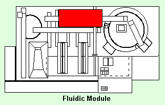
Wash Buffer Reservoir Operational Overview
The buffer reservoir provides a uniform pressure head at approximately pump height to improve pump precision. This reservoir incorporates a float sensor to monitor buffer volume. The fluid level control depends on the location of the float sensor when the instrument is rebooted or the AU is relaunched.
| Float sensor position during instrument reboot or AU relaunch | Instrument action | Result |
|---|---|---|
| Between full and empty | Reboot or AU program relaunch | Fluid level control does not run wash buffer peri-pump until float sensor reaches known level. When float sensor reaches empty, the peri-pump fills the reservoir. After float sensor reaches full, fluid level control maintains reservoir level at or above full. |
| Initialization | Depends on where the float sensor was during last AU reboot or AU program relaunch. See appropriate reboot or AU program relaunch section. | |
| Full | Reboot, AU program relaunch, or initialization | Fluid level control maintains the reservoir level at or above full. |
| Empty | Reboot, AU program relaunch, or initialization | Wash buffer peri-pump fills reservoir until float sensor registers full. After float sensor registers full, fluid level control maintains reservoir level at or above full. |
- Wash Pump 1 supplies Dispense Probe 1 (D1) and Dispense Probe 2 (D2).
- Wash Pump 2 supplies Dispense Probe 3 and the aspirate probe wash manifold.
- All of the outlet fitting are 1/4-turn o-ring fittings.
Sample Pump Operational Overview
Sample from a primary sample container is aspirated and dispensed with a positive displacement piston pump into a sample vessel (SV). The size of the internal ceramic piston is constant. This pump-valve assembly is located on the fluidic pump manifold and is labeled SP (sample pump). The pump and the tubing between the pump and sample probe tip are primed with wash buffer to create a rigid pipetting system to achieve precision and accuracy requirements. A three-way solenoid valve switches the pump between the wash buffer reservoir and sample probe. When aspirating sample, a small air gap at the probe tip prevents mixing of wash buffer and sample. Patient sample does not reach the pump or valve.
Precision Pumps Operational Overview
Reagent material from reagent packs and sample from sample vessels (SVs) are aspirated and dispensed with a positive displacement piston pump (dual-resolution piston pump [DRD]). The DxI 800 requires four reagent pipettors to support the 400 tests/hour throughput and the DxI 600 requires two reagent pipettor to support the 200 tests/hour throughput. These pipettors are arranged with two attached pipettors creating one reagent pipettor gantry assembly. Each pipettor has an associated dual-resolution precision pump and valve assembly that is mounted directly to the buffer reservoir. These assemblies provide the precision pipetting of reagents and samples (from SV's).
Wash Pumps Operational Overview
- Wash Pump 1 provides wash buffer to Dispense Probes 1 and 2 (D1, D2).
- Wash Pump 2 provides wash buffer to Dispense Probe 3 (D3) and Aspirate Probe 1 Wash Manifold.
- The buffer volume delivered at D1 (the QS volume) and is variable depending on the sample and reagent volume in the RV when it arrives at the probe wash station (QS volume = 500 µL - volume contained in RV).
- Aspirate Probe 1 Wash Manifold is supplied following each aspiration cycle.
Peristaltic Pump Operational Overview
- Aspirates waste fluids from the three aspirate probes.
- When the instrument is running an assay or maintenance, the peristaltic pump is rotating.
Pressure Monitoring Operational Overview
The DxI uses pressure sensors to detect aspirate and dispense pressure profiles of the precision pumps, sample pump, and aspirate probe wash. For more detail, refer to the OP - Process Monitoring - Pressure Checking document.
Component Locations
- Wash buffer reservoir
- Common pump manifold
- Sample pump
- Precision pumps (two in DxI 600, four in DxI 800)
- Wash pumps (two)
- Peristaltic pump
All pumps and the manifold are mounted to a metal tray that retains any fluid leakage.
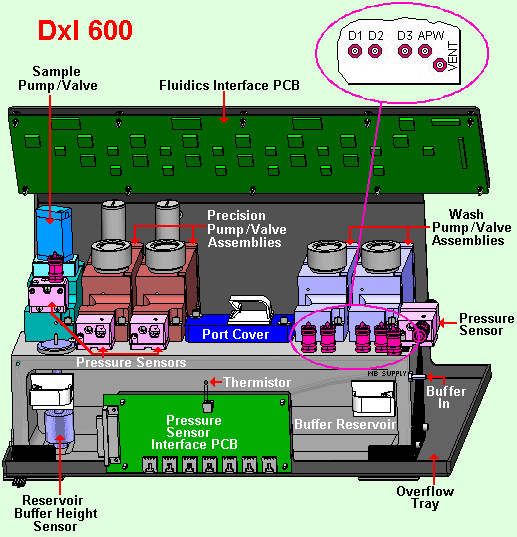
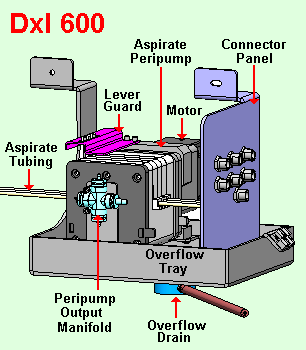
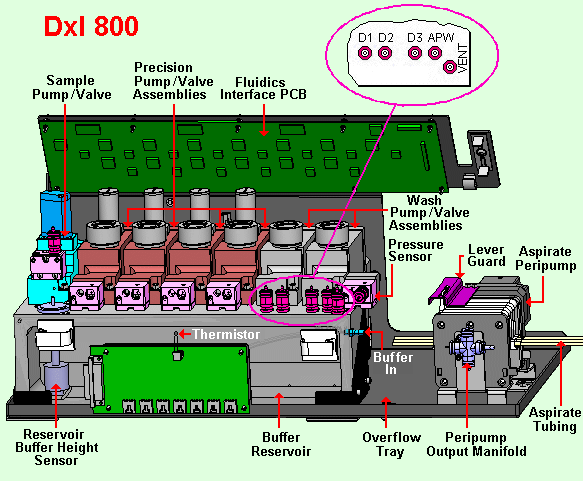
Component Function
| Component | Description and Function |
|---|---|
| Buffer Reservoir and Manifold |
|
| Fluidics Interface PCB | Provides connection point for all fluidic manifold voltages and input and output signals |
| Overflow Tray | Tray to gather fluid spills and direct overflow to bulk waste container. |
| Peristaltic Pump
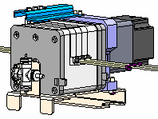 |
|
| Precision Pump and Ceramic Valve Assemblies
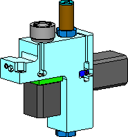 |
|
| Sensor, Pressure
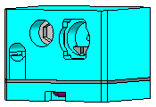 |
|
| Sensor, Reservoir Buffer Height | Signals software when wash buffer reservoir is in need of buffer or is full of buffer. |
| Sample Pump and Valve Assembly
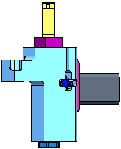 |
|
| Thermistor | Monitors internal ambient temperature in wash buffer reservoir area. |
| Wash Pump and Valve
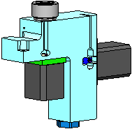 |
|
Precision Pumps and Valves
The precision pump and the tubing from the pump to the probe is primed with wash buffer. The tubing connecting the probes to the pump and valve manifolds is made of a rigid plastic. The rigid plastic allows the instrument to meet precision and accuracy requirements. During a sample pipetting routine, the precision pump aspirates and dispenses volumes as small as 5 µL (using the high resolution mode) or volumes as large as 2.25 mL (using the low resolution mode).
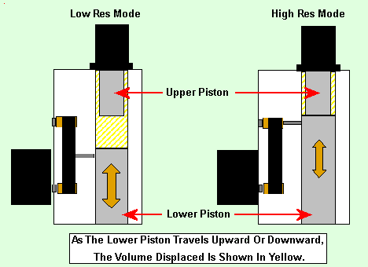
Ceramic Shear Valve:
- Precision pump
- Wash buffer reservoir
- Reagent pipettor
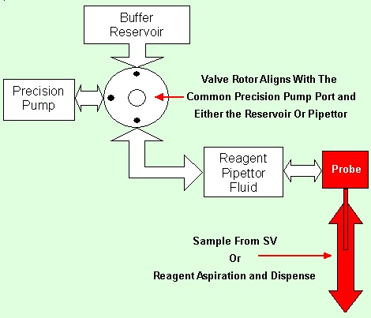
Precision Pump and Valve Assembly Component Locations
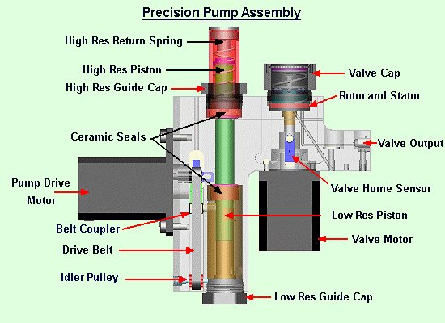